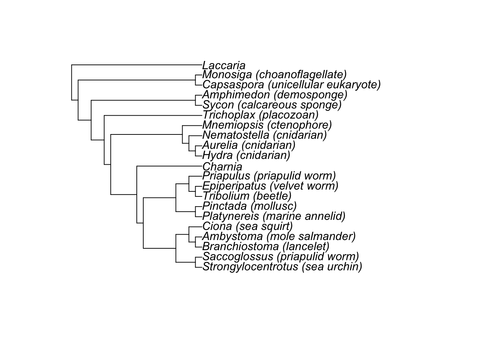

The purpose of this short exercise is to show you how quick and simple it can be to generate a tree using R.
We’ll be using a morphological matrix with representatives of Ediacaran and Cambrian animals generated by the fab palaeobiologist Francis Dunn. The original data set was downloaded from here and you can read the published results in Science Advances. The purpose of this tree was to try and establish this phylogenetic affinity of the enigmatic Charnia masoni, which is only known from the Ediacaran.
First install the necessary R packages.
install.packages("ape")
install.packages("phangorn")ape is a very widely used phyologenetics package that
contains (among many others) functions for reading, writing and plotting
phylogenetic trees and data. phangorn is a package that
contains functions for straightforward tree building.
Download the character data from here. Nexus is a common format used to store phylogenetic character data. Next we’ll read the data and convert it into the format used by phangorn.
# read in the character matrix in ape
dat = ape::read.nexus.data(file = "data/Frankie-data.nex")
# identify character states
chars = unique(unlist(unique(dat)))
# & convert to phanghorn object
dat = phangorn::phyDat(dat, type = "USER", levels = chars)Next we need to provide phangorn with a starting tree.
We can do this using an approach called
neighbour-joining. This simply calculates the
evolutionary distance between the taxa in your matrix (using the
dist.hamming function) and then groups taxa together based
on their relative distances (using the NJ function).
# create a neighbour joining starting tree
dm = phangorn::dist.hamming(dat)
tree = phangorn::NJ(dm)Then we’ll use the phangorn function
optim.parsimony to find the most parsimonious tree.
# estimate the parsimony tree
mp = phangorn::optim.parsimony(tree, dat)## Final p-score 305 after 1 nni operationsHow would you interpret the number output by this function?
Finally, we’ll can specify an outgroup to root the tree. We’ll use the fungus Laccaria because we know this is more distantly related to all other taxa in our tree than they are to eachother.
# identify the outgroup
outgroup = "Laccaria"
# root the tree
mp = ape::root(mp, outgroup = outgroup, resolve.root = TRUE)
plot(mp)
Based on this tree how would you interpret the phylogenetic position of Charnia? This is a bit tricky if you don’t know all the Latin names, but could you say whether it was a stem or crown group animal?
Because there are a large number of possible trees even for a small number of taxa, finding the most parsimonous tree is actually really algorithmically challenging. Many people use the open source software TNT, which can speed up the tree search. You can also tweek your parsimony analysis based on assumptions you want to make about your character data. For example, characters can be ordered (e.g. you can allow character state changes from 0 to 1 or from 1 to 2 but prevent changes from 0 to 2). You can also assign different weights to different characters if you believe some morphological characters are more informative about taxonomy.
We won’t explore parsimony any further in this course but it remains widely used for the anaylsis of morphologcial character data and is sometimes much faster than alternative tree-building approaches. It can be a good way to obtain an initial look at your data/tree before or while running more computationally intensive analyses.
A complete script for this exercise can be downloaded here.